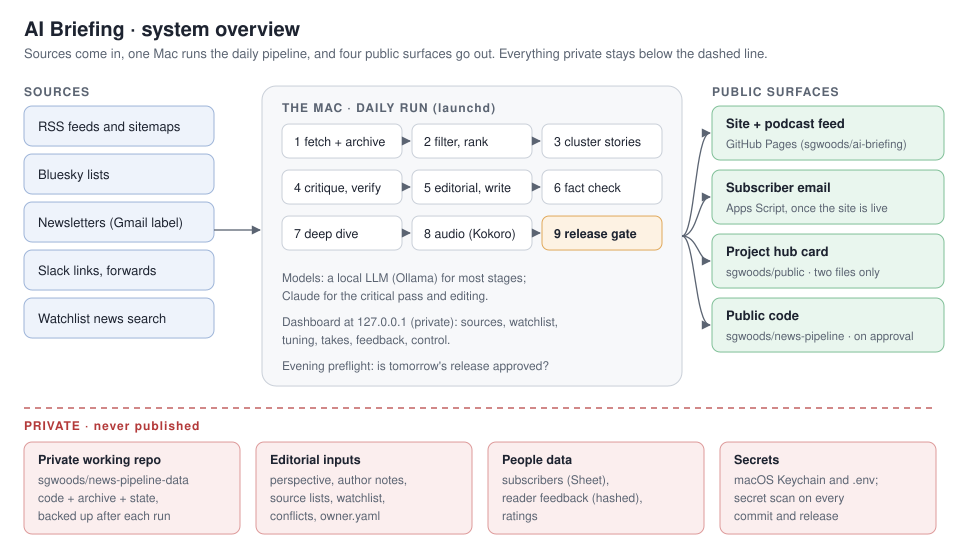
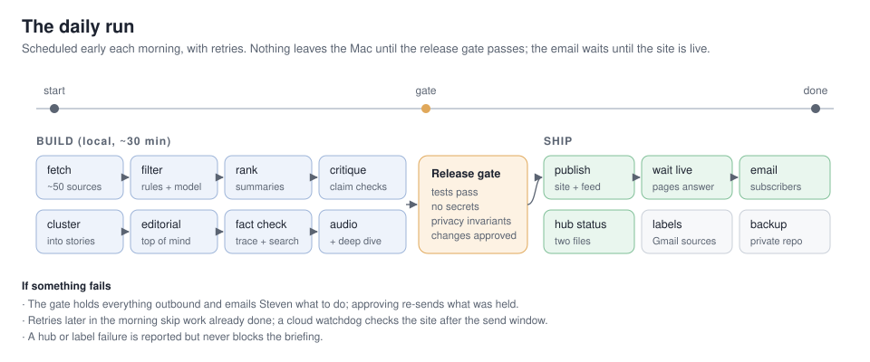
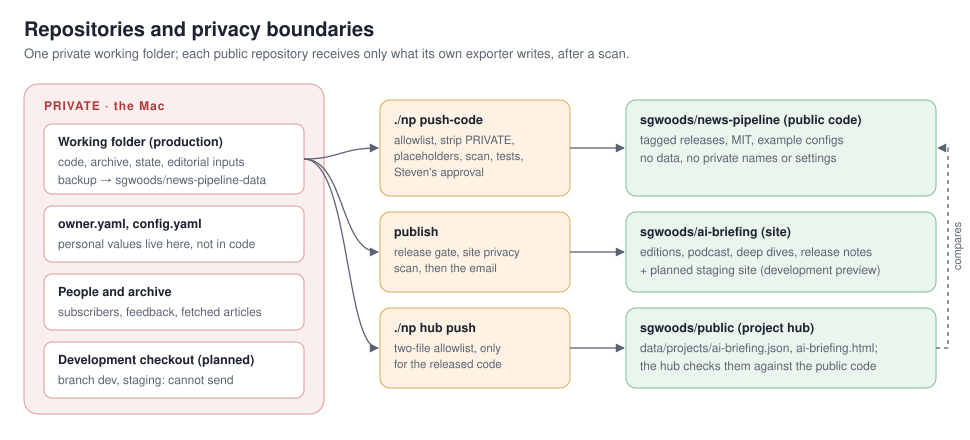
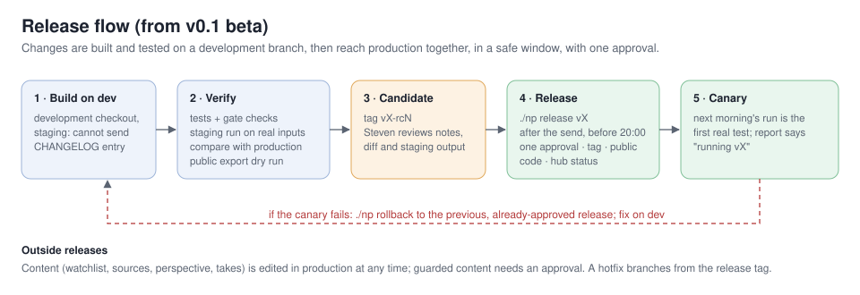
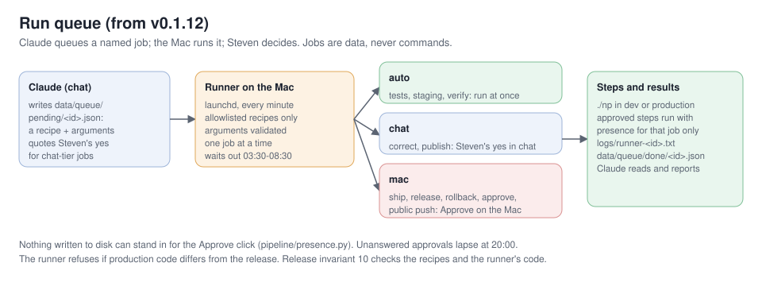

Running v0.2.42-beta · this page last changed 2026-10-31 · All docs
Architecture
AI Briefing is a daily AI briefing for early-stage investors: a written edition, a ~10-minute podcast episode with the day's deep dive, a static site and podcast feed, and a subscriber email. One machine runs the whole pipeline each morning, mostly with local models. Nothing reaches readers until a release gate has passed.
This page describes the design as of v0.2 beta. Release notes: CHANGELOG.md and the site's
release notes. Project page:
sgwoods.github.io/public/ai-briefing.html.

Current facts
Generated at build time.
- Release: v0.2.42-beta (2026-10-31)
- Schedule: daily at 05:00, 06:30, 07:30 (local time; later times are retries)
- Local model: qwen3:30b
- Modules: 74 in
pipeline/
Contents
- Design principles
- The daily run
- Components
- Grounding and fact checking
- Steven's takes
- The weekly critic
- Data and storage
- Privacy and security
- Repositories and public surfaces
- Releases
- Run queue
- Keeping these docs current
- Operations
- Component reference
- Running your own instance
Design principles
- Evidence over volume. Sources are weighed by how they know things (primary, reporting, analysis, opinion, aggregator, social), not by how many repeat a claim. A Must read needs primary or reporting evidence.
- Check before sending. Figures are traced to their sources and searched for before they are cut. Big claims get a critical read. Thin items have their article read.
- Local first. A local model (Ollama or LM Studio) handles most stages, Claude the critical pass and editing. Audio is local Kokoro TTS. Free and local tools come before paid services.
- Fail safe, not silent. An outbound step that can't pass the gate holds the work and tells the owner what to do. It never sends half-checked output.
- Private by construction. Personal values live in one private file, not in code. Public outputs are scanned for private terms before they leave.
- Data, never instructions. Everything fetched (posts, newsletters, replies, pages) is treated as content to assess, never as commands.
The daily run

| Stage | What happens | Module |
|---|---|---|
| fetch | New items from every verified source: RSS and sitemaps, Bluesky lists, a newsletter label (read-only IMAP), shared Slack links, watchlist news search. Archived append-only. | fetch.py, pages.py, bluesky.py, mailsource.py, slacksource.py, watchlist.py, archive.py |
| filter | Rules drop known noise, then a model keeps what matters to the audience. | stages.py |
| summarize / rank | A summary, tags and a relevance score per item; the best are read in full. | stages.py, reader.py |
| cluster | Items about the same thing become one story, with an evidence mix. | editorial.py, profiles.py |
| critique / verify | Each claim gets a verdict: holds, mixed, overstated, unsupported, unverified. Every Must read gets an evidence check. | stages.py, dive.py |
| editorial / write | Day in brief, Top of mind, Must read, Worth knowing, Open questions; citations point at the real article. | editorial.py, links.py, questions.py |
| fact check | Figures traced to their source, searched before they are cut, flagged when unconfirmed; numbers cross-checked; quotes kept only if word for word. Then the pre-send check: every factual sentence of the top section, What happened and Worth knowing is checked against its sources, rewritten when a second model confirms the fix, or listed to the owner in the takes email. | factcheck.py, factsearch.py, numbers.py, audit.py |
| first lines | The day in brief, Top of mind, deep-dive summaries, "Why today" and Agenda lines checked against the checked body and the item's own source; "not disclosed" claims compared with the last 14 editions; after the deep dive is written, the briefing is aligned with it (no story twice, no contradictions). | consistency.py |
| deep dive | A second segment on the day's focal topic, from a queue the owner curates; its script is fact checked turn by turn before it is recorded. | deepdive.py, audit.py |
| takes | A private email asks the owner for takes; the edition waits until the cutoff (09:15) or "done"; clean takes go into the site, email and audio. | takes.py |
| audio | The script becomes speech: a cold open with the lead story's sharpest line, pronunciations and a lint for words the voice may garble, loudness normalised (−16 LUFS, 96 kbps); the briefing and the deep dive are joined into one episode. Stories covered on earlier days get a short "what's new" segment. | audio.py, speech.py |
| release gate | Tests, a secret scan, privacy invariants, approval of security-sensitive changes. | release.py |
| publish | The static site, RSS and the podcast feed, after a privacy scan; then a wait until the pages answer. | site.py, publish.py, episodes.py |
| The edition to subscribers through an Apps Script mailer, only once the site is live. | mailer.py |
|
| hub status | The project's status file and page on the public project hub. | hub.py |
| afterwards | Source labels in the mailbox, reader feedback collected and triaged, a quality scorecard, a private backup. | mailsource.py, feedback.py, quality.py, publish.py |
A run records every stage's status, counts and timings (runlog.py). A short report goes in logs/last-report.md.
Components
- Models (
llm.py): one small interface over a local OpenAI-compatible server, Claude via the CLI, or Claude via the API. Each stage picks its backend in config. - Editorial lens (
perspective.py): a hand-written perspective file (people, topics, scepticism) steers filtering and the editor's view. Code reads it and never rewrites it. - Jev in the shadow (
jev.py): TypeSafe's structured-decision model is asked keep/drop for every item the local filter judged, and the two answers are logged side by side (data/state/jev-shadow.jsonl) with a daily token budget; nothing it says changes the edition until a week's agreement says it should (./np jev report). Public fetched items only; the key is in the Keychain; off in staging. - The advance deep dive (
deepdive.draft_tomorrow,apply_draft_feedback; launchd agentadvance, 15:30): tomorrow's deep dive is written and checked in the afternoon and saved to Drive as a draft with "Steven's take" and "Notes for the editor" sections. The morning run reads the Doc back: the take goes in; notes make the writer revise the draft (checked again, the take kept); then it is voiced and shipped with the edition. - The schedule (
schedule_page.py): the day's timetable as a table, built from config: what is produced, when, where it goes, and the window for Steven's feedback on each piece and how it is picked up (dashboard /schedule,./np schedule). - The morning post (
slackpost.py,card.py): when the email goes out, one branded post in the team channel from the app's bot user: the day's leads, one of Steven's published takes, the deep dive, the links, and the day's card (a PNG in the newsletter's colours, drawn with Pillow and the Inter files inassets/fonts). Gated like every outbound step; once a day; the Slack reader ignores bot posts. - Drive copies and takes from the Docs (
drivedocs.py): the edition and deep dive are written to the Briefings folder as Google Docs. Steven's edits to their takes sections (alone or with Claude in the Doc) are read back every 20 minutes and applied like any other take, through the same privacy check; an edited deep-dive take re-records the deep dive. - House views (
houseviews.py): a second hand-written file,house_views.md, holds the views Our read takes positions under and Steven's dated theses. Each Must read's Our read names its view; the lead story adds the case for, the case against, the deciding question and our lean. Every position goes todata/positions/ledger.jsonlwith what would change our mind and a check date. On Sundays the calls that are due are scored against what we have reported since (right, wrong, mixed; "too early" gets more time), and the site's Calls we made page lists them. - Accuracy audit (
audit.py): after the edition ships, about five of its claims are checked again against their own sources, and the consistency flags for the day are counted. Partly right or contradicted claims send Steven one alert; the site's Accuracy page shows the daily counts and every correction (shipped.py). The same module runs the checks before sending (audit.presend) and before a deep dive is recorded (audit.check_sections);./np audit deepdive DAYis a dry run on a recorded dive. Details: Fact checking 4d and 4e. - The top of the edition (
textutil.legacy_top): withbriefing.top_format: mergedone 5-bullet "Today in 30 seconds" with the diligence question replaces the day in brief and Top of mind; every reader of the markdown sees it in the classic shape through one function. - Tuning (
tuning.py,profiles/): named presets for lengths, sections and tone, edited from the dashboard. - Dashboard (
dashboard/): a local Flask app on 127.0.0.1 for sources, watchlist, tuning, takes, feedback, runs, quality and control. It's never exposed to the internet. - Services (
service.py): launchd agents for the daily run, the evening preflight and the dashboard. - Secrets (
vault.py): macOS Keychain first, then.env(gitignored, mode 600).
Smaller pieces:
| Area | Modules |
|---|---|
| Sources | sources.py (resolve and verify feeds for tracked people), suggest.py (source suggestions), xsource.py (X accounts and the members of named X lists through RSS: public mirrors or a local RSS generator, never the paid API; ./np x probe), xdigest.py (a weekly X digest by web search for accounts no mirror reaches), linkedin.py (the owner's own posts from LinkedIn's export), record.py (the owner's public record) |
| Owner touchpoints | editor_note.py (the owner's private evening note), alerts.py (an action-needed email when an edition can't go out), todos.py (the shared to-do list), report.py (the short status report in logs/last-report.md) |
| Quality | review.py (the weekly review, from local files only), critic.py (the weekly critic email: scores against ten benchmark shows, charts, suggestions; owner only) |
| Settings and time | owner.py (who runs this instance), settings.py (edit single config values without disturbing comments), schedule.py (when scheduled jobs actually run, by the local clock) |
| Public surfaces | version.py (the running version), docs.py (these pages on the site), scrub.py (scrubbing shared by the public code export and the docs) |
| Run queue | runner.py (jobs from the chat, run on the Mac), presence.py (is a person here to approve) |
| Owner's voice | takes.py (the owner's takes: private email, Slack words, privacy hold, wait, audio) |
| Mail script | clasp.py (deploys the Apps Script mailer with Google's clasp CLI: status, setup, deploy behind the owner's approval) |
| Helpers | textutil.py (HTML to text, page metadata, URL ids, dates) |
Grounding and fact checking
Every claim a reader sees must trace back to text the pipeline holds: the archived item, the article the reader fetched, or a page found by search. The checks run in layers: ground, judge, check every figure and quote, check the first lines against the body, then the privacy gate. After shipping, editions change only through visible corrections. Unverifiable sentences are cut and the edition still goes. Only privacy blocks. The full list, with the reasons behind each layer, is in Fact checking.
Steven's takes
From v0.2 the owner can add his own view to the day's edition, verbatim and labelled "Steven's take"
(takes.py, docs/plans/my-takes.md). Once the edition is written, a private email lists numbered slots: 0 for the
day overall, T for Top of mind, and 1 to N for each Must-read story. The email carries the whole edition, with an
"Add your take" button after each section that opens a reply with the section's number filled in (mail clients
strip real text boxes), and a private "Type your takes on one page" link. The day's site page isn't published
until the cutoff, so that page is served by the mail script instead (v0.2.10): the pipeline uploads the held
edition with a box after each section and one Submit (setreview, key only), and the script shows it only with his
signed token (scope t, two days). The boxes post to the script, which stores the takes for the pipeline to read
(the review / takes / takes_pull actions in the Apps Script). After publishing, the site page shows the same
boxes with his token (takes.js). He replies from his phone ("1: ..."), or
posts in his team's Slack channel with the story's link (his own words only; nobody else's text is ever kept).
The edition waits until the cutoff (09:15) or a "done" reply, then:
- each take is checked for private names, the owner's addresses, personal links, disclosure phrases and the confidential marker; one that fails is held back and listed to him, never published;
- the clean takes go into one store (
data/commentary/<day>.json, the same store the dashboard writes), which the site, the email and the mail-out read; - the host reads each take verbatim after its story ("Here's Steven's take"), and only the briefing audio is re-rendered; the briefing text and its fact checks don't change;
- raw replies, held takes and what was published are kept in the private archive.
Takes are opinion: they sit outside the sourced claims and the fact check, and no model rewrites them. A crash or mailbox failure never blocks the edition; it ships without takes. Later retries see a run that is still waiting and leave it alone.
The weekly critic
Every Saturday the briefing is scored against the latest episode or issue of ten of the most popular tech and AI
shows, with a fixed ten-part rubric weighted for an investor daily: content selection, accuracy, depth,
timeliness, structure, opinion, distinctiveness, writing, tone and production. A private email gives the owner the
score and rank, charts by characteristic against the field, the trend week by week and ten ranked suggestions with
options; the owner picks what to build that week (critic.py). Method, rubric, limits and the latest results:
The critic.
Data and storage
- Archive: append-only files under
data/(items, analyses, stories, runs). Nothing deletes or rewrites history. - Editions:
briefings/<day>.md, the audio and the deep dives. The site is rebuilt from these each publish. - Editorial inputs: the perspective, source lists, newsletter rules, watchlist, source profiles and pronunciations. They're hand-edited or edited from the dashboard.
- People: subscribers live in a Google Sheet behind the mailer. Feedback is stored with a hashed sender id and a first name only.
- State: seen-message lists, release approvals, alerts. Everything private is committed to a private repository and backed up after each run.
Privacy and security
- Release gate (
release.py): every outbound action (site, email, Gmail label writes, backups, hub, public code) callsrequire(). It re-runs the tests, the secret scan and the invariants when code changes, and needs the owner's approval of security-sensitive files. Invariants include: - mailbox access only through a least-privilege guard;
- no private author notes in any prompt;
- outbound URLs from content checked against an allowlist (
netguard.py); - every outbound function behind the gate.
- Mailbox (
mailguard.py): one IMAP wrapper. Each purpose may open only its own labels, read-only except for adding labels. - Scans: the site, every email and every public export are scanned for private names, the owner's addresses, private links and trackers before they leave.
- Owner details: names, addresses, organization and bio live in
owner.yaml, which is never public. Code defaults are neutral placeholders. - Staging (
env.py): a development checkout can't reach readers. The gate refuses every outbound action there, and the mailer only sends review copies to the owner, marked [STAGING].
Repositories and public surfaces

| Repository | Contents | Written by |
|---|---|---|
| private working repo | code, archive, state, editorial inputs | the daily run and the owner; backed up after each run |
| sgwoods/news-pipeline | this code, tagged releases, example configs | ./np push-code: allowlisted export, PRIVATE blocks removed, placeholders, scan, tests, owner's approval |
| sgwoods/ai-briefing | the public site, RSS and podcast feed, release notes | publish, after the gate and the site scan |
| sgwoods/public | the project hub's status file and page for AI Briefing | ./np hub push: two files only, and only for the released public code |
Shipped editions don't break
Once a day's email has gone out, that day is shipped (shipped.py). Every production publish is checked against
what readers already have. Shipped pages and deep dives must still be there, a shipped edition's text changes
only through a visible correction, shipped audio inside the retention window keeps its URL (a remaster adds a
file and keeps the old one), and the feeds can't shrink. After the push, the newest shipped pages, both feeds and
the latest MP3 must answer, or the previous site is put back and the email waits. A failed publish never sends
the email.
Releases

Production runs a tagged release (VERSION, CHANGELOG.md). Changes are built on a development branch whose
checkout is in staging mode. They're verified with a full staging run compared against production, tagged as a
release candidate, reviewed, and promoted in a safe window with a single approval. The next morning's run is the
canary, and a rollback returns to the previous, already-approved release.
From v0.2.33 a release goes out through the ship job in one of two lanes: the slot lane, once per weekday from
13:00 (release.slot), or the fix lane, for something broken, any time in the release window (08:30–20:00, or
earlier once the edition is out). Every ship first soaks: today's edition is rebuilt with the dev code and compared
with production, and a compare that needs review stops the ship unless the owner accepts it. Rules and approvals:
docs/security/RELEASE.md. Editorial content (sources, watchlist,
perspective, takes) isn't code and is edited in production at any time.
| Command | Where | What |
|---|---|---|
./np dev setup |
production | creates the development checkout (branch dev, staging) |
./np staging sync |
dev | brings in production's latest data and fixes |
./np staging run [DAY] |
dev | rebuilds an edition with the dev code; outbound off, review email to the owner only |
./np staging compare [DAY] |
dev | staging vs production for the same day; flags what needs review |
./np staging publish |
dev | the development preview at sgwoods.github.io/ai-briefing-staging/ (banner, noindex) |
./np release VERSION "reviewed: ..." |
production | merges dev with one approval, then tags it and updates the public code, backup and hub |
./np rollback "reviewed: ..." |
production | returns the code to the previous release |
./np runner status |
production | the run queue: what's queued, waiting for Approve, and done |
Modules: env.py (production or staging), devenv.py (the development checkout), compare.py (staging vs production), releaser.py (release and
rollback), release.py (the gate).
Run queue

From v0.1.12 the owner can run releases and fixes from the Claude chat instead of a terminal (runner.py,
docs/plans/run-queue.md). Claude writes a job file naming a recipe and its arguments. A launchd agent on the Mac
runs only allowlisted recipes, with validated arguments, as argument lists rather than shell text. There are
three tiers:
| Tier | Recipes | Runs when |
|---|---|---|
| auto | tests, sync, preview, compare, doctor, gate, verify, consistency, critic-email, takes-test, takes-check, takes-sync, drive-save, mailer-status, audio-check, audit, audit-deepdive, x-probe, advance, and (from v0.2.37) remaster and deepdive-rebuild |
at once |
| chat | correct, publish, restore, takes-done, takes-apply, send-held, source-add, mailer-setup |
the job quotes the owner's yes from the chat |
| mac | ship, release, rollback, approve, install-hooks, phone-setup, ntfy-setup, the public code push, deploy-mailer |
for ship and release only (v0.2.37), the owner's yes quoted from the chat when the task starts, once tests and the soak pass; otherwise the owner clicks Approve in a dialog on the Mac, or on his phone (below) (also early, while the morning run is still going: the job then runs as soon as the edition is out); a ship's Approve also covers the public code export and the mail-script deploy |
The click grants presence in memory for that job's approved steps only (presence.py). Apart from the quoted
chat yes for ship and release (which rests on Claude quoting the owner faithfully, as the chat tier does), no
file or setting can stand in for it: an early click is kept as a signature over that job, made with a key in the Mac's Keychain (which
the VM and Claude can't read), used once and only that day. Jobs that change production wait out the morning run,
which ends when the day's edition has gone out. Unanswered approvals lapse at 20:00.
Phone approvals (v0.2.22): once the phone-setup job has stored an approval passphrase in the Keychain (typed
into a Mac dialog), each mac-tier job also emails the owner a one-time link to the mail script's approve page, good
for that job and that day. He types the passphrase there and taps Approve or Reject. The page sends only a proof
(HMAC of the answer and job id under PBKDF2 of the passphrase, salted with the link's nonce), and the runner checks
it against the Keychain on its next tick. Neither the mail script's records nor the email can stand in for it, so
Claude, which can read both, still can't approve. The Mac dialog still appears, for 90 seconds, so the runner keeps
ticking while it waits.
Phone notifications (ntfy.py, v0.2.24): the preferred phone path. The Mac publishes to a private ntfy topic
(a random name kept only in its Keychain; the phone's ntfy app subscribes once). An approval is a notification
with Approve and Reject buttons; a tap posts the job's one-time token to a second private topic the runner polls,
so no passphrase is typed. Nudges (the takes page is ready, the evening note is out, a run needs attention) open
the owner pages in one tap, with owner links minted the way the mail script mints them. Set up with the
ntfy-setup job (a Mac Approve), then ./np ntfy test. The
runner refuses to work if production code differs from the release. Release invariant 10 checks the recipes and
the runner's code. Results go to data/queue/done/ and logs/runner-<id>.txt. ./np runner status lists the
queue.
Keeping these docs current
- On every release (it blocks): the drift tests in the release gate check that this page names the running version, that every module it names exists, that every public module is described in a hand-written doc, and that every diagram is used. Generated sections (current facts, component reference) are rebuilt at each publish, and the site's docs are rebuilt with them.
- At the decision: the release approval dialog and the release output list the modules that changed while no
doc describing them did ("docs to review"). The list is saved to
data/state/docs-impact.json. - Afterwards (automatic): a weekly docs refresh reads that list and the week's changes, updates the docs and diagrams on the development branch, and leaves them for the next release. Docs changes ship through releases like code.
Operations
- Schedule: early morning with two retries. A retry skips work already done. When takes are on, the edition is built early and held until the cutoff (09:15) or the owner's "done"; retries at 09:30, 10:30 and 12:00 send a held edition if the Mac was offline at the cutoff. An evening preflight checks that tomorrow's release is approved.
- Hearing what was published (v0.2.17): after the email, the pipeline reads the public podcast feed, downloads
the day's episode, transcribes it locally with Whisper and compares it with the script it was voiced from
(
listen.py). A section that wasn't heard (low coverage) sends one action-needed email. The transcript is kept indata/transcripts/and published with the next publish: a WebVTT file next to the episode, apodcast:transcripttag in the feed and a link on the day's page../np audio-check [DAY](run queue:audio-check). - Copies in Drive (v0.2.11): the edition and the deep dive are also written as Google Docs to the mailer
account's
Briefingsfolder in Drive, shared with the owner, so he (and Claude, through Drive) can read them anywhere and give feedback. At the pre-release takes email:<day> · AI Briefing (draft, held for your takes) · <lead>and<day> · Deep dive · <title>, linked from that email. Once published, the draft is renamed<day> · AI Briefing · <lead>and rewritten with the owner's takes, and the deep dive doc is rewritten. The mail script writes them (savedoc, key only,drivedocs.py); a rerun rewrites the same doc and nothing is deleted../np drive save [DAY] [draft](run queue:drive-save) writes them by hand. A Drive failure never holds the edition. - When something needs the owner: an action-needed email states the issue and the fix. Approving re-sends what was held back.
- Outside view: a cloud watchdog checks the public site after the send window, and the project hub compares the exported release with the public code.
- Commands:
./np help. Every command saves its full output underlogs/.
Component reference
Generated from each module's own description at build time.
| Module | Purpose |
|---|---|
alerts.py |
Action-needed email to Steven when the daily edition can't go out (Steven, 2026-10-19 |
archive.py |
Append-only archive on plain files. |
audio.py |
Phase 2 |
audit.py |
The daily accuracy audit (critic 2026-10-24, #10D; Steven 2026-10-27). |
bluesky.py |
Bluesky lists and Steven's own posts as sources, via the public AT Protocol API (no key, no login). |
card.py |
The daily card |
clasp.py |
Deploy the mail script (scripts/apps-script/Code.gs) with Google's clasp CLI instead of copy and paste. |
compare.py |
Staging against production for the same day |
consistency.py |
Short texts readers see first must agree with the checked text and the sources (2026-10-23). |
critic.py |
The weekly critic |
deepdive.py |
Topical deep dive |
devenv.py |
The development checkout |
dive.py |
Deep dive on one story |
docs.py |
Public documentation on the site |
drivedocs.py |
The day's edition and deep dive as Google Docs in Drive (Steven, 2026-10-26). |
editor_note.py |
Steven's private evening note |
editorial.py |
Briefing v2 |
env.py |
Production or staging. |
episodes.py |
Which days are published |
factcheck.py |
Claim-to-source trace for the written edition (fact review 2026-10-18, P1-1). |
factsearch.py |
Look for a figure before the fact check cuts it (Steven, 2026-10-18 |
feedback.py |
Reader feedback |
fetch.py |
Fetch new items from every verified source. |
houseviews.py |
Read-only parser for house_views.md, and the positions ledger (Steven, 2026-10-27). |
hub.py |
AI Briefing on Steven's public project hub (sgwoods.github.io/public) |
jev.py |
Jev (TypeSafe's System One model) as a shadow filter (Steven, 2026-10-29/30). |
linkedin.py |
Steven's own LinkedIn posts, from LinkedIn's data export (and from Slack, when he shares one there). |
links.py |
Make every citation point at the real article (runs in the write stage; never fails the briefing). |
listen.py |
Listen to what was published (Steven, 2026-10-27) |
llm.py |
LLM backends behind one tiny interface |
mailer.py |
Daily email to subscribers, sent through Steven's Google Apps Script (scripts/apps-script/Code.gs). |
mailguard.py |
The only way the pipeline talks to Gmail |
mailsource.py |
Newsletters as a source |
netguard.py |
Requests to URLs that came from content (links in posts, newsletters, model output) may only reach the public internet |
ntfy.py |
Notifications on Steven's phone through ntfy (Steven, 2026-10-28 |
numbers.py |
Number check for one edition |
owner.py |
Who runs this instance |
pages.py |
Sources without RSS |
perspective.py |
Read-only parser for perspective.md. |
presence.py |
Is a person here to approve? A terminal, or the run queue's approval dialog clicked on this Mac. |
profiles.py |
Source profiles (source_profiles.yaml) |
publish.py |
Push the static site (site/) to a separate public GitHub repo served by GitHub Pages. |
quality.py |
Daily quality scorecard |
questions.py |
Open questions from the briefings (editorial.open_questions), with a status you keep on the Questions page. |
reader.py |
Read the article behind a thin item before its evidence check. |
record.py |
Public record |
release.py |
Release gate |
releaser.py |
Promote a release from dev to production, or roll production back (docs/plans/release-process.md). |
report.py |
Compact, paste-friendly status report → logs/last-report.md. |
review.py |
Weekly quality review, run on the Mac from local files only (no web, no tools, no mailbox). |
runlog.py |
Records every run |
runner.py |
Run queue |
schedule.py |
When the scheduled jobs actually run |
schedule_page.py |
The day's schedule as a table (Steven, 2026-10-29) |
scrub.py |
Scrubbing shared by the public code export and the public docs |
service.py |
Background services on macOS (launchd user agents) + health of what the pipeline depends on. |
settings.py |
Change single values in config.yaml without disturbing comments or layout. |
shipped.py |
Shipped editions don't break (v0.1.7). |
site.py |
Static, phone-friendly public site |
slackpost.py |
The morning post in the team channel (Steven, 2026-10-28) |
slacksource.py |
Links Steven shares in an internal Slack channel, as a source (read-only, Slack Web API, free). |
sources.py |
Resolve and verify RSS/Atom feeds for every tracked person. |
speech.py |
The speech layer |
stages.py |
LLM stages |
suggest.py |
Source suggestions |
takes.py |
Steven's takes |
textutil.py |
HTML → text, page metadata, URL ids, and date parsing. |
todos.py |
A shared to-do list for Steven and Claude |
tuning.py |
Tuning profiles |
vault.py |
Secrets |
version.py |
The running version |
watchlist.py |
Company watchlist |
xdigest.py |
Weekly X digest by Claude web search, for the accounts in x.yaml no mirror can reach. |
xsource.py |
X / Twitter accounts via Nitter-style mirrors (public RSS), never via X's paid API. |
Running your own instance
See the README: copy owner.example.yaml and source_profiles.example.yaml, write your own config.yaml,
sources.yaml and perspective.md, then run ./np tests and ./np run.